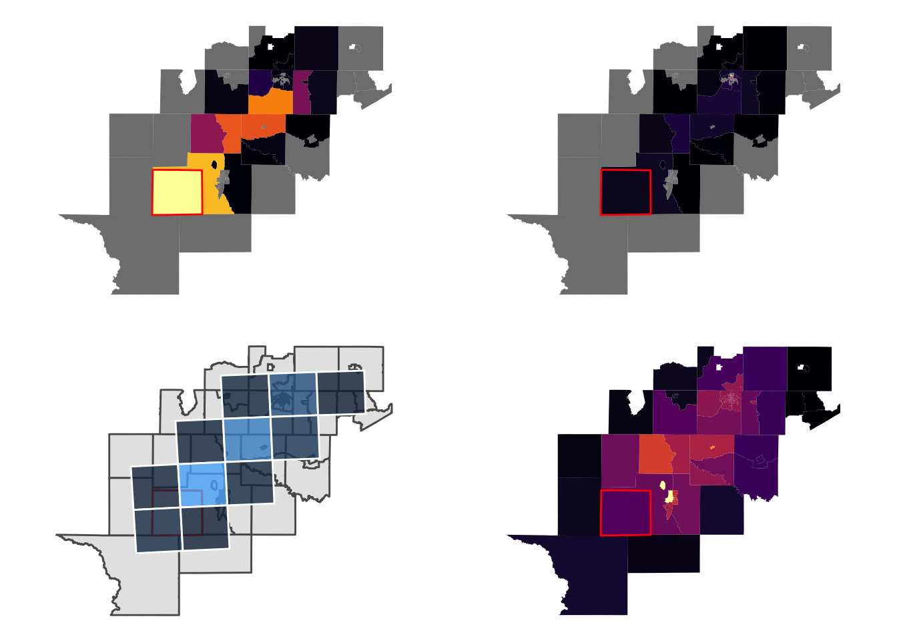

4 Parcels checkpoint
## Reading layer `tl_2016_48_tract' from data source
## `/Users/audiracmichelle/GitHub/audiracmichelle/flaring_texas/data/input/tl_2016_48_tract/tl_2016_48_tract.shp'
## using driver `ESRI Shapefile'
## Simple feature collection with 5265 features and 12 fields
## Geometry type: POLYGON
## Dimension: XY
## Bounding box: xmin: -106.6456 ymin: 25.83716 xmax: -93.50804 ymax: 36.5007
## Geodetic CRS: NAD834.1 check 1
- check disperser was able to run simulations for all emissions in disperser_input (compare with
ls | wcat the simulations location)
4.2 check 2
- validate that the number of parcels that are dispersed in each simulation run are counted in the polygon_parcel function
## [1] 12## [1] 1200 1200 1200 1200 1200 1200 1200 1200 1200 1200 1200 1200 1200 1200 1200
## [16] 1200 1200 1200 1200 1200 1200 1200 1200 1200 1200 12004.3 check 3
- visual inspection of counts and raw concentrations and exposure estimates using two values for
res.linkthe length of the grid square’s sides that are used to compute hyads exposure. The first group usesres.link=12000and the second groupres.link=50000.
4.3.1 Group 1
Hyads smothes the parcel dispersion and assigns an exposure measure. With res.link=12000 the exposure looks good.
## $`48235950100`##
## $`48013960600`
##
## $`48149970600`
##
## $`48283950300`Sometimes it is not obvious how the daily exposure estimation is smooth.
## $`48495950400`
##
## $`48173950100`##
## $`48507950301`
##
## $`48165950200`4.3.2 Group 2
Parameter tuning of grid resolution must balance between grid’s square sizes, polygon sizes and sparsity (number of simulated parcels).
## [1] 50## $`48235950100`
##
## $`48013960600`##
## $`48149970600`##
## $`48283950300`## $`48495950400`
##
## $`48173950100`
##
## $`48507950301`
##
## $`48165950200`